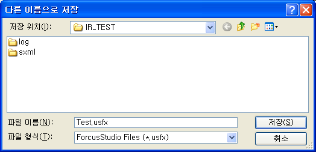
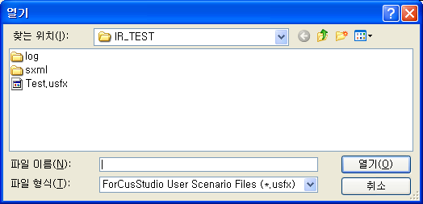
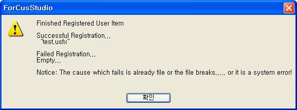
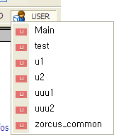

| 사용자 시나리오 | 시작 다음 이전 |
프로젝트 독립적인 시나리오로써 하나의 시나리오가 마치 공통함수 처럼 사용이 됩니다. 프로젝트 독립적인 성격이므로 프로젝트가 포함하고 있는 Global.ssfx 의 전역 변수나 정의는 사용하지 못하고, 지역변수나 세션변수, 시스템 함수 등은 사용이 가능합니다.
구조
· File ( .USFX : User Scenario File Extend ) - 사용자 시나리오 파일은 생성하면 .USFX 라는 확장자로 생성 됩니다.
· Directory - 사용자 시나리오 파일은 생성 시에는 프로젝트 디렉토리 또는 유저가 지정한 디렉토리에 생성 됩니다. 유저가 이 시나리오를 사용하기 위해서는 등록하여야 하는데 등록하게 되면 기본으로 지정된 사용자 시나리오 디렉토리나 유저가 설정한 디렉토리로 복사를 하게 됩니다. - 기본 사용자 시나리오 등록 디렉토리는 "C:\Documents and Settings\윈도우 로그인 아이디 \Application Data\Bridgetec\Forcus\User Scenario\" 이며, 작성한 시나리오를 사용자 시나리오로 등록하면 복사되는 곳입니다.
· Project Independence - 사용자 시나리오 파일은 프로젝트에 포함되지 않습니다. - 사용자 시나리오 파일은 프로젝트와 같이 백업되지 않습니다. - 사용자 시나리오 파일은 검색/치환 대상에서 제외됩니다. - 사용자 시나리오 파일에서는 전역 변수, 전역 정의를 사용할 수 없습니다.
· File>Create User Scenario 메뉴를 선택하면 편집창이 나타나면서 생성하고자 하는 파일 이름을 입력하는 창이 팝업 됩니다. 생성된 파일의 기본 저장 디렉토리는 오픈한 프로젝트 디렉토리 입니다.

· 생성한 시나리오는 등록을 해야만 사용이 가능합니다.
· Tools>Regist User Scenario 메뉴를 선택하면 저장된 디렉토리의 사용자 시나리오를 선택할 수 있도록 창이 팝업 됩니다. 여러개의 파일을 동시에 선택 가능 합니다.

· 등록을 하게 되면 선택한 .usfx 파일은 지정한 사용자 시나리오 파일 디렉토리나(Tools>Options 의 User Scenario Tab 에서 설정) 기본 사용자 시나리오 파일에 복사 됩니다.(등록된 같은 이름의 사용자 시나리오 파일이 이미 존재할 경우 등록이 되지 않습니다.)

· 사용자 시나리오로 등록이 되면 Item Toolbar 의 User 에 등록한 시나리오가 표시 됩니다.(사용자 시나리오는 현재 이름 순으로 최대 20개 까지만 표시 됩니다.)

· 시나리오 등록에 있어 위의 등록 절차가 아닌 파일 복사만 하여도 시나리오는 등록됩니다. 지정한 시나리오 폴더나 기본 사용자 시나리오 폴더에 작성한 사용자 시나리오 파일(.usfx)을 복사하면 됩니다.(이 경우는 ForCusStudio 를 재실행 하여야 적용됩니다)
· 등록된 사용자 시나리오 파일은 File>Edit User Scenario 메뉴에서 등록된 시나리오 폴더로 바로 접근하여 편집할 수 있습니다.
제거
· 등록된 시나리오의 삭제는 따로 메뉴가 없고, 등록 디렉토리에서 해당 파일의 삭제로 완료 되며, 적용은 ForCusStudio 를 재실행 하여야 합니다.
사용
· Item Toolbar 의 User 에서 사용하고자 하는 시나리오를 선택할 수 있습니다.(또는 Toolbox)
· 자세한 사용법은 UserCall Item 에서 참조 바랍니다.
컴파일
· 컴파일을 하게 되면 "*.uxml" 이 생성 되며, 한번 생성되면 변경이나 삭제가 아니면 다시 생성 되지 않습니다.
|
| Copyrights(C) Bridgetec.co.kr. All Rights Reserved | 시작 다음 이전 |